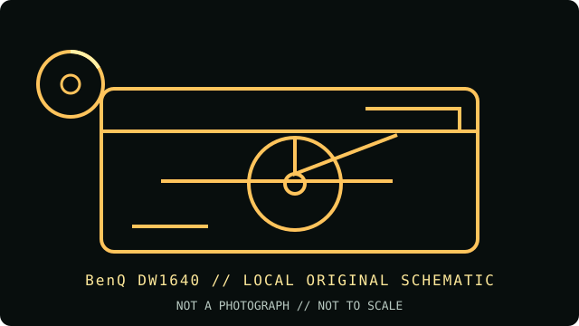

[ INDIVIDUAL COMPONENT // OPTICAL DRIVES ]
BenQ DW1640
BenQ DW1640 is an E-IDE/ATAPI internal writer supporting both DVD+R DL and DVD-R DL, with different maximum speeds for each. Its 16× single-layer DVD rating does not imply 16× dual-layer recording.

IDENTIFICATION: BenQ DW1640 · Internal 16× DVD±RW dual-layer writer, 2005 generation. Match the full model and revision marking to the cited archive before applying variant-specific specifications.
Model-specific specifications
| Catalog subcategory | DVD writers |
|---|---|
| Exact product identifier | BenQ DW1640 |
| Generation / product type | Internal 16× DVD±RW dual-layer writer, 2005 generation |
| DVD/CD media support | Writes DVD±R, DVD+R DL, DVD-R DL, DVD±RW, CD-R and CD-RW. Reads DVD-ROM, supported recordable DVD formats, CD-ROM, CD-R/RW and common CD audio/data formats. This SKU is not a DVD-RAM recorder. |
| Maximum read/write speeds | Write: DVD±R up to 16×; DVD+R DL up to 8×; DVD-R DL up to 4×; DVD+RW up to 8×; DVD-RW up to 6×; CD-R up to 48×; CD-RW up to 32×. Read: DVD-ROM up to 16×; CD-ROM up to 48×. |
| Interface and mechanics | Internal 5.25-inch half-height E-IDE/ATAPI (PATA) drive. Use the channel jumper and an ATA-compatible host; it has a 2 MB data buffer. |
| Host compatibility | BenQ lists a PC host of Pentium III 550 MHz or faster with at least 128 MB memory for the bundled-era recording environment; documented OS compatibility includes Windows 98SE/ME/2000/XP. Current systems need a working PATA interface/bridge and compatible burning software. |
| Variant and use notes | The DW1640 model suffix identifies this drive, not the DW1650 or other DW16xx members. High-speed writes are media/firmware dependent; use supported media, suitable burning software and verified readback. |
Compatibility and preservation
Advertised maximum rates are media- and firmware-dependent; they are not a guarantee for aged, damaged or unsupported discs. For archival work, retain the full drive model, firmware, media identifier, write strategy and software version with the image or master.
- Confirm the complete label and PATA jumper position before installing; do not infer capabilities from a related suffix or OEM rebrand.
- Use supported blank media and a compatible recorder application, then verify the completed disc by readback and checksum.
- Handle optical media by its edge or hub, store it in a cool, dry location, and preserve an unmodified original when possible.
Manufacturer and archive sources
- BenQ DW1640 — CDRInfo specifications and reviewExact dual-layer and CD/DVD write/read rates, media families and interface.
- BenQ DW1640 model specification sheet — archived PDFArchived manufacturer specification sheet, including host requirements and media ratings.
These references document the named model/family; they do not certify a particular used drive, firmware revision or blank-media batch. Confirm exact suffix and region/OEM variant on the hardware label.